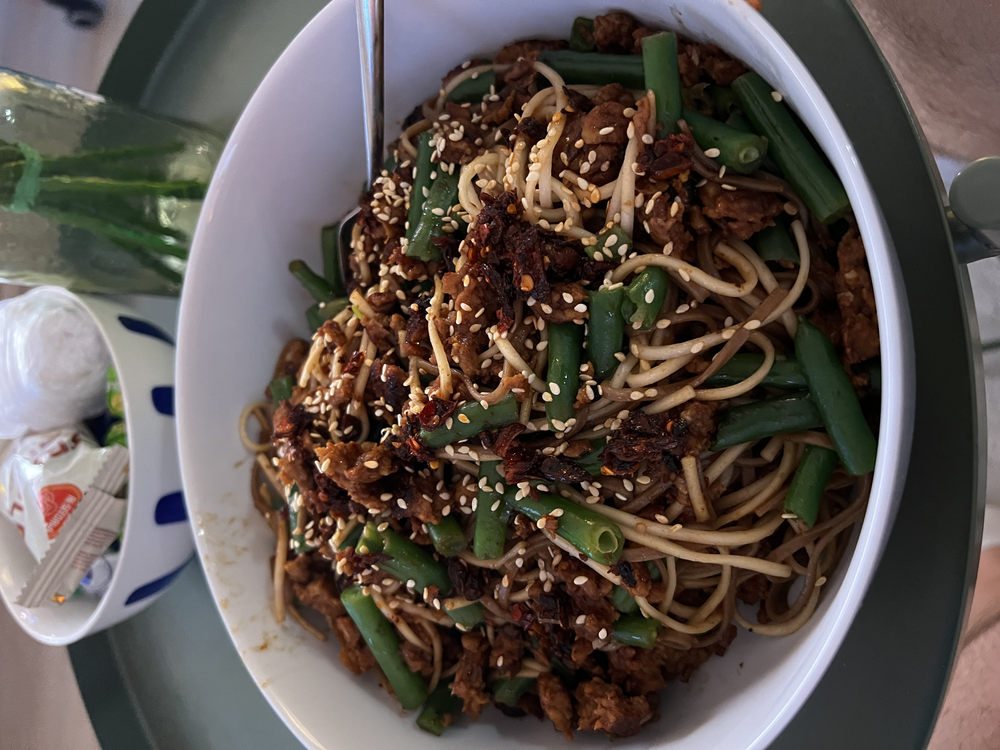

Meat and Noodles

This recipe will fill you up with delicious hoi sin meat and noodles
Ingredients
- 1 pack of soba noodles
- 250g lean ground beef
- hoi sin sauce
- sesame seeds
- sesame oil
- soy sauce
Cooking Instructions
- Marinate the beef with sauces. Then fry.
- Boil noodles according to instructions.
- Mix everything and serve topped with sesame seeds and sesame oil.